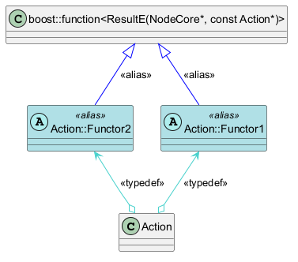

@startuml
skinparam class {
BackgroundColor<<alias>> #PowderBlue
}
!define ARROR_TYPEDEF_COLOR #MediumTurquoise
!define ARROR_ALIAS_COLOR #0000ff
!define L_GUILLEMET U+00AB
!define R_GUILLEMET U+00BB
!define assocStereotype(x) <L_GUILLEMET>x<R_GUILLEMET>
!define genArrowTypedef(x,y) "x" o-up-> "x::y" ARROR_TYPEDEF_COLOR : assocStereotype(typedef)
!define genArrowAlias(x,y) "x" <|-- "y" ARROR_ALIAS_COLOR : assocStereotype(alias)
!define genArrowTypedef(x,y,arr) "x" arr "x::y" ARROR_TYPEDEF_COLOR : assocStereotype(typedef)
!define genArrowAlias(x,y,arr) "x" arr "y" ARROR_ALIAS_COLOR : assocStereotype(alias)
!definelong genClassTypedef(cls,org,new)
class "org"
class "cls::new" <<(A,PaleTurquoise)alias>>
genArrowTypedef("cls", "new")
genArrowAlias("org", "cls::new")
!enddefinelong
!definelong genClassTypedef(cls,org,new,arrClsToNew,arrOrgToNew)
class "org"
class "cls::new" <<(A,PaleTurquoise)alias>>
genArrowTypedef("cls", "new", arrClsToNew)
genArrowAlias("org", "cls::new", arrOrgToNew)
!enddefinelong
class Action
genClassTypedef(Action, "boost::function<ResultE(NodeCore*, const Action*)>", Functor1)
genClassTypedef(Action, "boost::function<ResultE(NodeCore*, const Action*)>", Functor2, o-up->, <|--)
@enduml